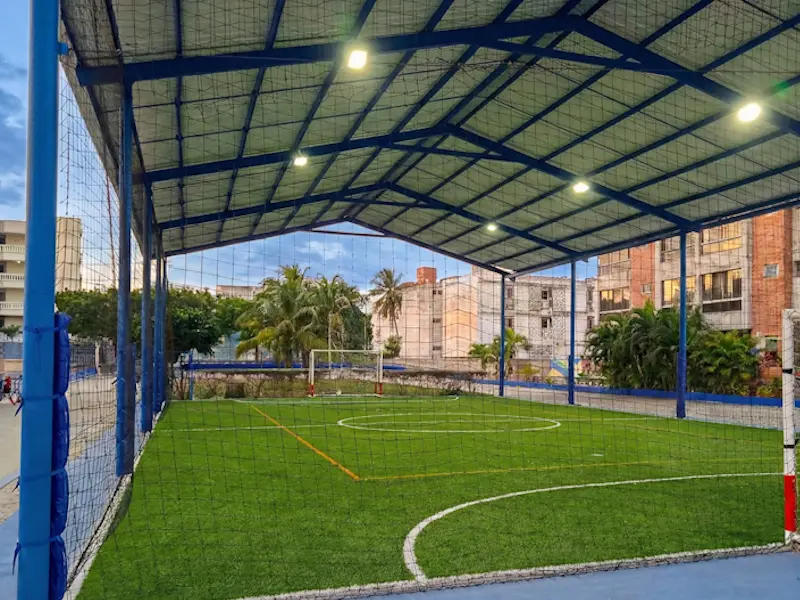

Grama Monofilamento y Fibrilada

Fútbol 5, 7 y 11
Sistemas profesionales con grama monofilamento y fibrilada certificada, shockpad y relleno de caucho granulado SBR/Arena. Incluye filtros y drenaje.
Cotizar Proyecto →